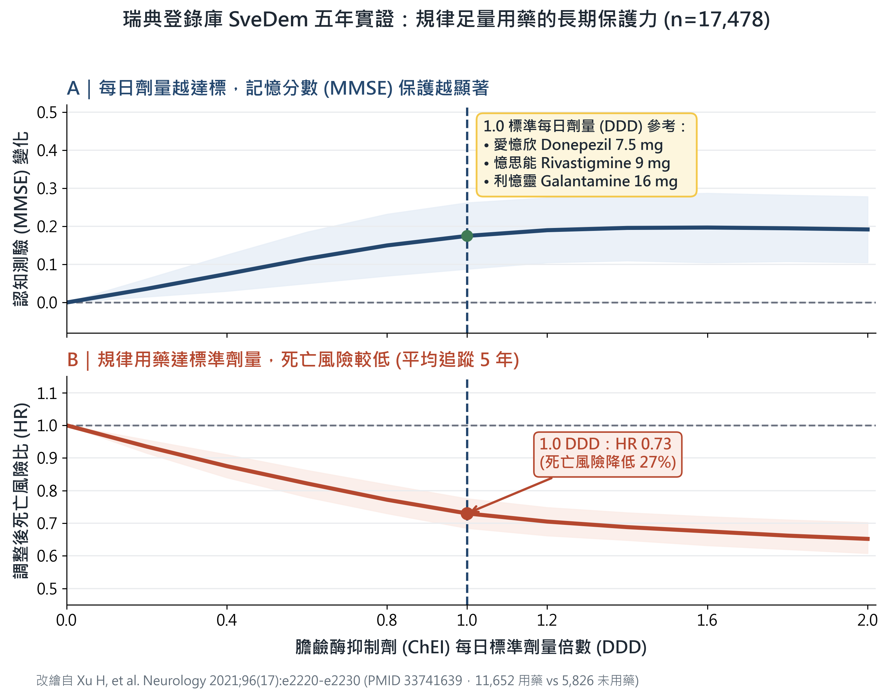
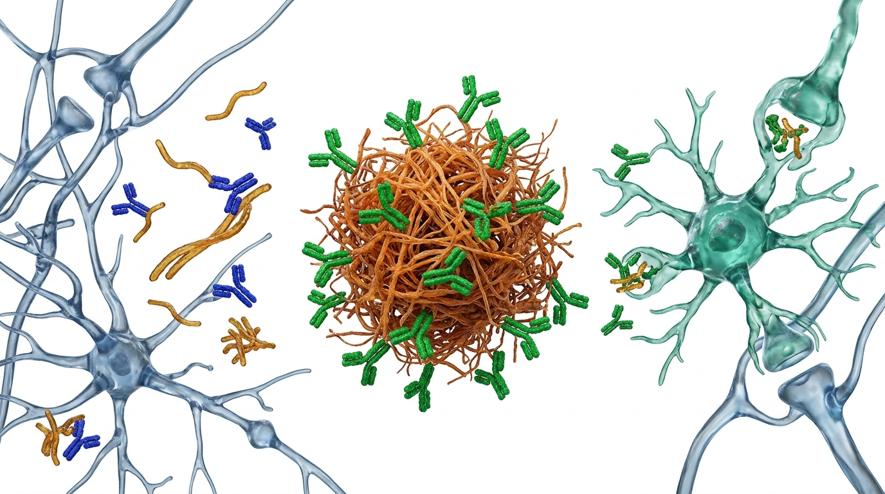
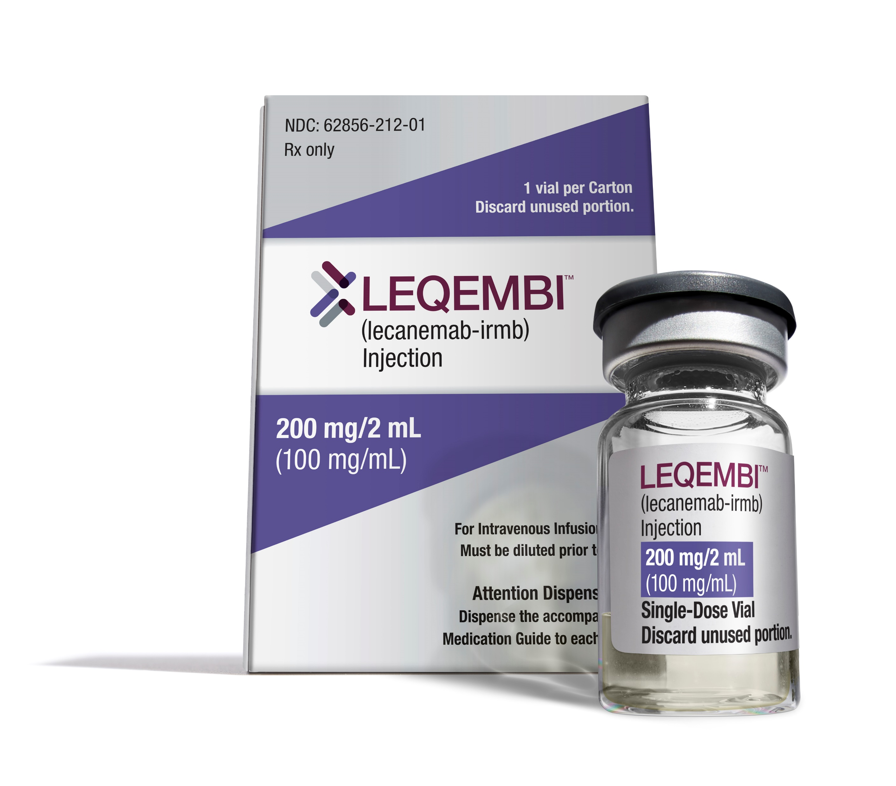
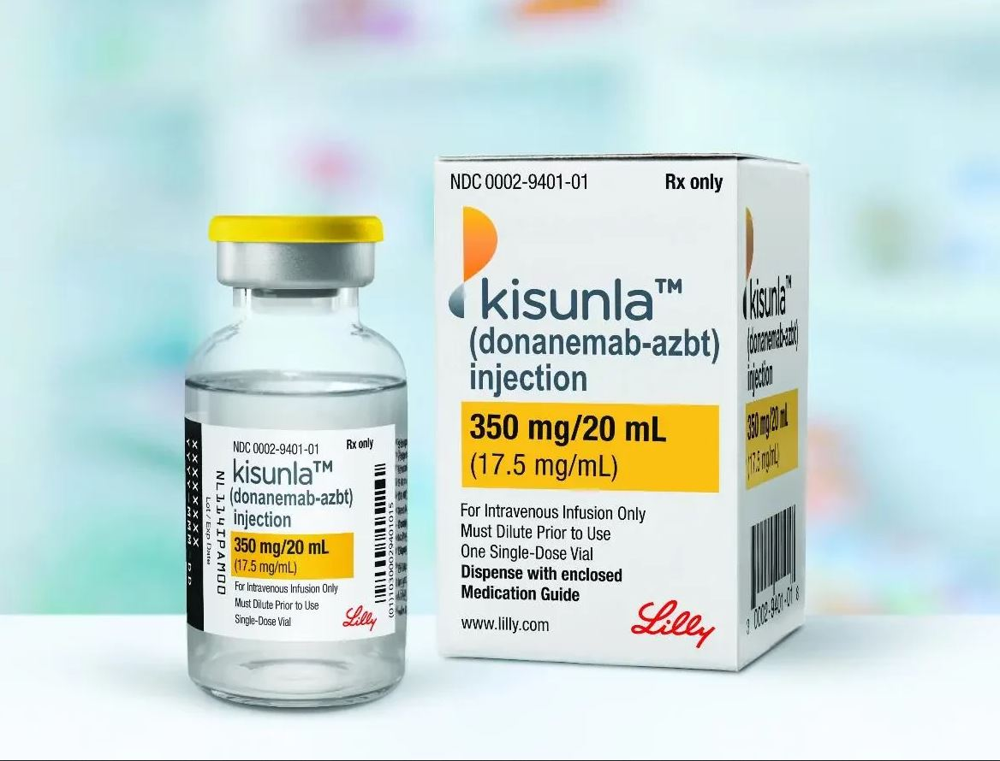
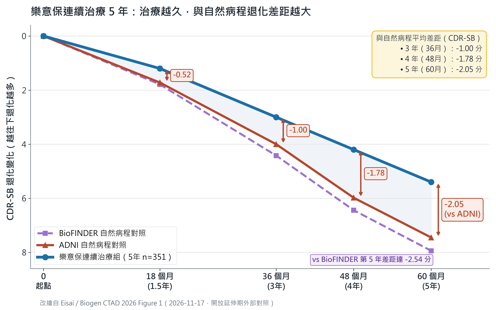
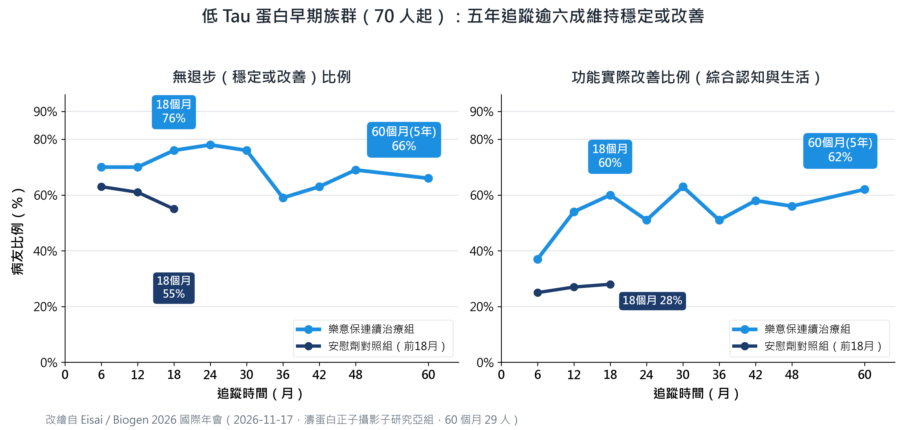
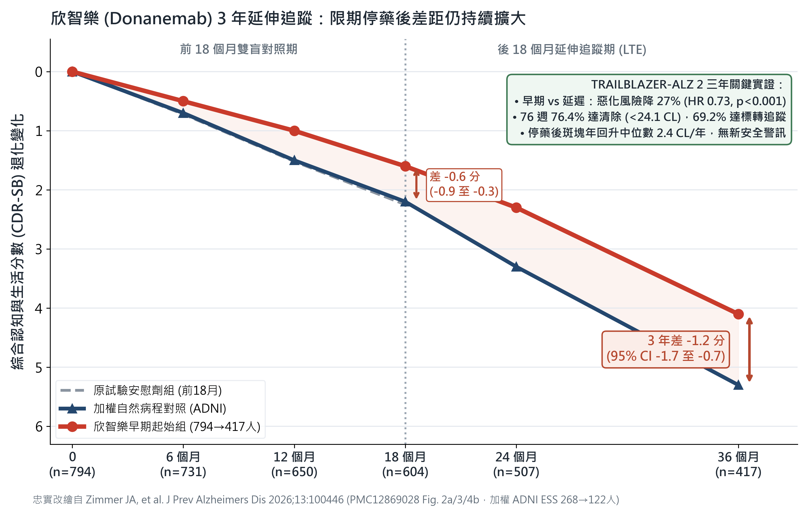
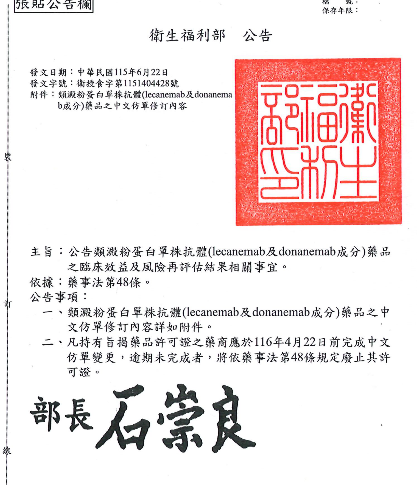
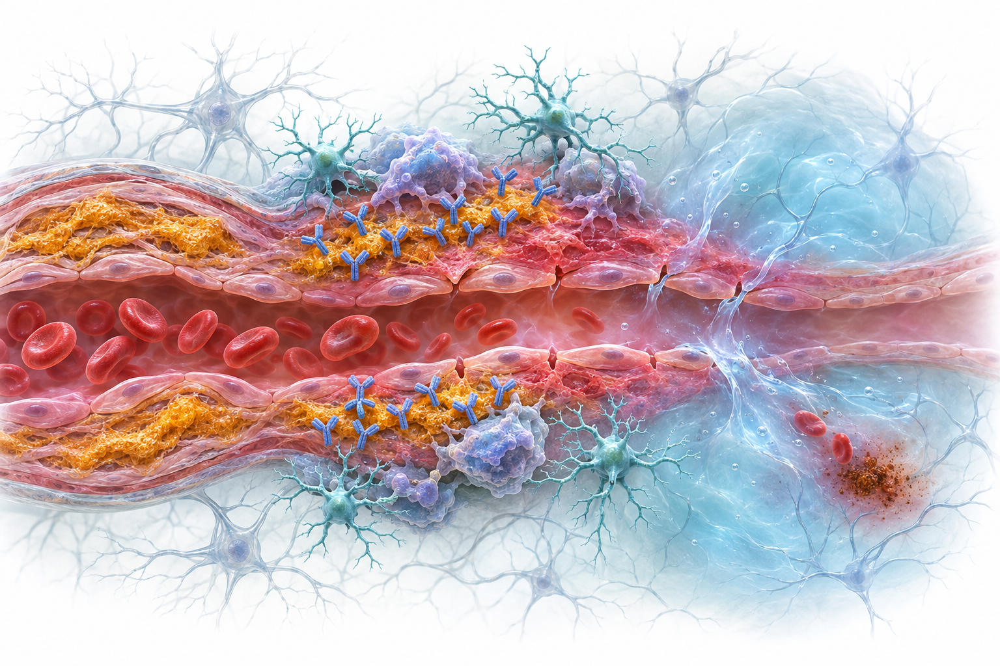
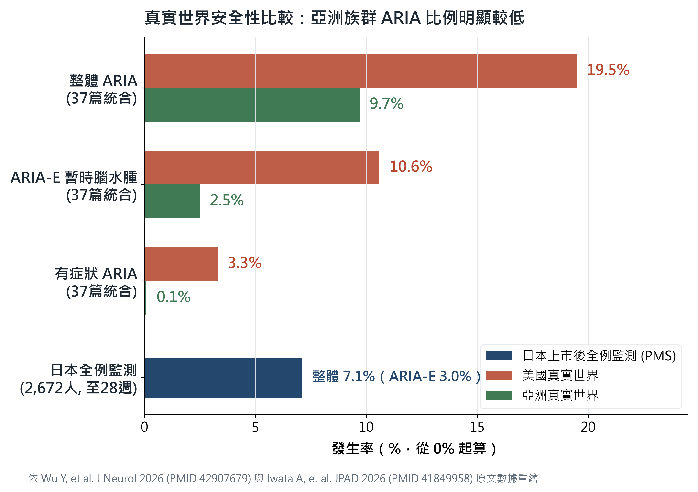

在記憶被擦掉之前：
為什麼越早治療越好？
把握黃金期！失智症最新治療趨勢與全方位照護選擇
馬偕紀念醫院 陳培豪 醫師
主辦：台灣臨床失智症學會、衛采製藥股份有限公司
2026/12/12（六）10:40–11:00｜台北市政府青年局 6F 演藝廳（Y17）
各位病友、家屬大家好，我是馬偕醫院陳培豪醫師。接續李承軒醫師的早期警訊，接下來聊聊為什麼越早治療越好，以及最新的治療與照護選擇。
剛出現輕微忘記時，我們該怎麼回應？
點擊一個選項，看看不同選擇對黃金治療期的影響

「只是年紀大了，沒事吧？」
長輩剛開始健忘時，您會怎麼選？
選 A 先觀察兩年，往往會錯過最能介入的黃金期。
選 B 只吃保健食品，不但延誤評估，也可能漏掉可逆性病因。
選 C 趁還能自理時就醫，才能把治療選擇權留在自己手上。
失智症不是突然發生，大腦其實早就有警訊
理解病程四階段，看懂為什麼「輕度認知障礙與輕度失智」是關鍵窗口
臨床前期
腦內類澱粉蛋白開始累積，但日常生活與記憶看起來仍完全正常。
輕度認知障礙（MCI）
記憶力略減、偶爾重複發問，但仍能獨立買菜、搭車與理財。
輕度失智症
開始需要家人提醒服藥或財務，但仍保有尊嚴與大部分自理能力。
中重度失智症
大腦神經元受損已廣，抗類澱粉蛋白新藥在此階段已不再適用。
打個比方：早點治療就像在「剛冒煙時就滅火」，能守住最多完好的房子；等大火延燒到整棟樓，再強的水柱也很難救回原本的家。
阿茲海默症像一條長坡道，不是昨天才突然發生。
臨床前期類澱粉蛋白已悄悄堆積，外表卻看不出來。
進入輕度認知障礙，仍能獨立生活，這正是第一個黃金窗口。
到輕度失智時仍保有自理能力，同樣在黃金窗口內。
一旦進入中重度，新藥便不再適用；早治療就像剛冒煙就滅火，能守住最多日常。
在台灣，每十三位長者就有一位面臨失智挑戰
衛福部 2024 年全國社區失智症流行病學調查（國衛院執行）
7.99%
65 歲以上盛行率，推估約 35 萬人
56.88%
以阿茲海默型失智症最多
66.01%
曾出現情緒與行為症狀（BPSD）
各年齡層失智症盛行率（從 0% 起算）
超過半數患者屬於阿茲海默型，越早辨識與介入，受惠的家庭就越多。
出處：衛生福利部 2024 年委託國家衛生研究院「全國社區失智症流行病學調查」報告。
這是台灣正在面對的真實數字。
衛福部 2024 年調查顯示，65 歲以上盛行率百分之 7.99、約 35 萬人；其中五成七是阿茲海默型，更有六成六曾出現情緒或行為症狀。
從 65 歲到 85 歲以上，盛行率從百分之 2.40 攀升到百分之 23.23。
正因逾半屬於阿茲海默型，越早介入就能守護越多家庭。
傳統藥物不是沒效，早點用五年追蹤也看見保護力
健保給付口服與貼片仍是基石，不同成分與劑型各有分工
膽鹼酶抑制劑（ChEI，健保給付）
愛憶欣（Donepezil）：口服｜適用輕、中、重度阿茲海默症（AD）
憶思能（Rivastigmine）：吃／喝適用 AD 與巴金森氏症失智症（PDD）；貼片無 PDD 適應症
利憶靈（Galantamine）：口服｜適用輕至中度 AD
神經訊號調節劑（NMDA 拮抗劑，健保給付）
美金剛（Memantine）：口服｜適用中至重度 AD，穩定神經訊號
−27%
早用藥與死亡風險降低 27% 相關（HR 0.73，SveDem 5 年追蹤）。
−31%
利憶靈與重度失智風險較低相關（HR 0.69）。

11,652 位用藥 vs 5,826 位未用藥（追蹤 5 年）：每年記憶分數 (MMSE) 平均多守住 +0.13 分
出處：台灣 TFDA 各藥品仿單；Xu H, et al. Neurology 2021;96(17):e2220–e2230. PMID 33741639（SveDem 觀察性研究顯示相關性）。
先談健保給付的傳統藥物，選對劑型與規律使用非常關鍵。
愛憶欣適用輕、中、重度；憶思能吃和喝的也適用巴金森氏症失智症 PDD，但貼片台灣仿單沒有 PDD 適應症；另有利憶靈與中重度的 Memantine。
瑞典五年追蹤顯示，確診三個月內用藥就像溫和踩煞車，每年認知分數平均多守住 0.13 分。
規律用藥也與死亡風險降低百分之二十七相關，切勿自行停藥。
傳統藥點亮訊號，抗類澱粉蛋白治療（ATT）掃除路障
兩種單株抗體各有鎖定標的，標記後交由大腦「微膠細胞 (Microglia)」吞噬清除
傳統藥物：點亮路燈、加強訊號
幫助神經突觸間繼續傳遞訊息，就像把變暗的路燈調亮，維持記憶與日常功能。
雙新藥標的：精準鎖定、標記清除
藍｜樂意保 (Lecanemab)：鎖定可溶性原纖維與斑塊。
綠｜欣智樂 (Donanemab)：專攻成熟類澱粉斑塊。
微膠細胞吞噬＋雙軌接力互補
清道夫細胞吞掉被抗體標記的路障，讓神經訊號重新順暢流動。
3D 機轉圖解：雙單株抗體鎖定標的與微膠細胞清除

① 可溶性原纖維 (Protofibrils) 藍抗體：樂意保 (Lecanemab) ② 成熟類澱粉斑塊 (Mature Plaque) 綠抗體：欣智樂 (Donanemab) ③ 微膠細胞 (Microglia) 吞噬出處：van Dyck CH, et al. N Engl J Med 2023. PMID 36449413；Sims JR, et al. JAMA 2023. PMID 37459141（3D 機轉示意圖為 AI 生成）。
新藥 ATT 怎麼工作？我們看右邊的 3D 機轉示意圖。
神經周圍堆積了可溶性原纖維與成熟的類澱粉斑塊，擋住訊號傳遞。
藍色抗體樂意保鎖定原纖維與斑塊，綠色抗體欣智樂則專攻成熟斑塊。
貼上標記後，右側的微膠細胞就會主動吞噬清除，讓神經訊號恢復順暢。
台灣核准兩種 ATT 新藥與食藥署規定
樂意保與欣智樂真實藥品與作用比較，以及台灣食藥署 (TFDA)、健保署現行規定
樂意保（Lecanemab）
核准字號：衛部菌疫輸字第001273號（2025-03-28）。
給藥與實證：每 2 週靜脈點滴，雙重鎖定原纖維與斑塊；Clarity AD（1,795 人）18 個月 −0.45 分，已有 5 年連續追蹤。

欣智樂（Donanemab）
核准字號：衛部菌疫輸字第001285號。
給藥與實證：每 4 週靜脈點滴，靶向成熟斑塊；逾 75% 於 76 週達清除（改良滴定降 ARIA-E 至 13.7%），清除後可討論停藥。

台灣食藥署（TFDA）與健保署現行規定（與美國不同之處）
1. 基因與確診：兩藥皆嚴格排除 APOE ε4 同型合子（雙套高風險基因）；須以正子攝影 (PET) 或腦脊髓液 (CSF) 確診，台灣尚未核准單以抽血確診。
2. 劑型與健保：台灣目前尚未核准皮下注射或維持劑型；兩藥目前健保皆未給付、全自費（估算年藥費約 100–150 萬元）。
出處：TFDA 樂意保（Lecanemab）／欣智樂（Donanemab）仿單；台灣《Lecanemab 適當用藥建議》V2；PMID 36449413、37459141、40172303；科技新報／聯合新聞網 2025。
直接比較台灣核准的兩種新藥與法規規定。
樂意保每兩週輸注一次，雙重鎖定原纖維與斑塊，並有五年追蹤資料。
欣智樂每四週輸注一次，正子攝影確認斑塊清除後可討論停藥。
台灣規定四重點：排除 ApoE ε4 雙套基因、須 PET 或腦脊髓液確診、尚無皮下或維持劑型，且目前健保未給付需全自費。
為什麼「越早治療越好」？四大領域證據已經齊聚五年
點擊任一張卡片，查看文獻、會議、政府與全球視角的關鍵焦點
出處：PMID 33741639、41355080、41330788；Eisai CTAD 2026（2026-11-17）；衛授食字第1151404428號；WHO WHA78(23)。
越早治療越好的證據，已來自四大領域。
第一，同儕審查期刊證實傳統藥與新藥的長期差距。
第二，2026 年 11 月 CTAD 會議發表樂意保五年數據。
第三，台灣食藥署把關安全，並推動長照 3.0。
第四，全球 53 國核准與 WHO 將行動計畫展延至 2031 年。
CTAD 2026 五年實證：持續治療拉大退化差距
2026 年 11 月 17 日阿茲海默症國際臨床試驗年會 (CTAD) 公佈（351 人完成連續 5 年治療）

治療越久差距越大
較北美自然病程 (ADNI)：3 年 −1.00、4 年 −1.78、5 年 −2.05 分（較北歐 BioFINDER 達 −2.54 分）。
5 年每百人多守 18 位
進中重度由 48.7% 降至 31.0%（風險降 49%）；進下一期風險降 36%（61.9% 對比 77.5%）。
爭取約 2.5–3.5 年（推估）
模型推估延緩輕度認知障礙 (MCI) 至輕度約 2.5 年、至中度約 3.5 年（註：模型推估；5 年為外部對照）。
出處：Eisai / Biogen CTAD 2026（2026-11-17）與 CTAD 2025 模型推估；PMID 42339400（18 個月後為外部自然病程對照）。
這張繁體中文大圖，呈現 CTAD 2026 最新的五年連續治療結果。
治療 3 年差 1.00 分、4 年 1.78 分、5 年拉大到 2.05 分，治療越久差距越開。
五年下來，進入中重度比例由百分之 48.7 降到 31.0，每百人多守住約 18 位留在早期。
依長期模型推估約可爭取 2.5 到 3.5 年，我們也誠實註明這是模型推估與外部對照。
低 Tau 蛋白早期族群：五年追蹤逾六成出現改善
腦內「Tau 濤蛋白」堆積還很少的更早期患者，五年後的認知與生活能力表現

66% 無退步
62% 甚至出現改善（綜合認知與日常功能 CDR-SB，追蹤 60 個月）。
69% 生活穩定
日常自理功能（ADCS MCI-ADL）69% 無退步、62% 改善；純認知（ADAS-Cog14）55% 無退步、52% 改善。
越早＝越有機會
越早抓緊黃金期，目標不只是減緩退化，更有機會把日常自理穩穩留住。
出處：Eisai / Biogen 新聞稿（2026-11-17，CTAD 2026）eisai.com/news/2026/news202663.html（可選 tau PET 子研究亞組）。
這頁是最充滿希望的發現。
追蹤治療前腦內 tau 蛋白堆積還很少的更早期病友。
五年後有百分之 66 沒有退步、百分之 62 出現改善，日常生活能力也有百分之 69 維持穩定。
越早治療，越有機會把記憶與自理能力留得更久。
欣智樂 (Donanemab) 三年延伸追蹤實證
TRAILBLAZER-ALZ 2 延伸追蹤（Zimmer et al., JPAD 2026）：限期給藥停藥後差距仍持續拉開

3 年差距擴大至 −1.2 分
早期起始組 vs 加權外部對照 (ADNI) 之 CDR-SB 持續拉開（6 月 −0.2 → 36 月 −1.2 分）；52 週內完成療程者 3 年差距仍達 −1.3 分。
早開始比晚開始風險降 27%
早期起始組較延遲起始組，3 年內進展至下一病期風險顯著降低（CDR-Global HR 0.73，p<0.001），延誤期流失的分數追不回來。
逾 76% 達清除，停藥回升慢
76 週時 76.4% 達類澱粉清除（<24.1 CL）轉為追蹤，停藥後斑塊年回升中位數僅 2.4 CL/年，無新增安全警訊。
出處：Zimmer JA, et al. J Prev Alzheimers Dis 2026;13:100446. PMID 41330788（PMC12869028，外部 ADNI 加權對照）。
另一款抗類澱粉蛋白新藥欣智樂，也有最新的三年延伸追蹤實證。
早期起始組追蹤三年，退化差距擴大到 1.2 分，即使一年內完成療程停藥也維持相近效益。
早開始比延後開始，三年內惡化到下一期的風險降低百分之二十七。
超過七成六病友在七十六週達成斑塊清除，停藥後回升緩慢，且沒有新增安全警訊。
全球五十三國核准，真實世界資料同步印證
從美國、歐洲、日本到世界衛生組織 (WHO)，早期診斷與長期治療已成全球共識

世界衛生組織 (WHO) 失智症專頁（2026 年 10 月更新）；WHA78 決議行動計畫展延至 2031 年
全球 53 個國家核准｜WHO 展延至 2031
樂意保已於全球 53 國核准；世界衛生組織 (WHO) 第 78 屆世衛大會將全球失智症行動計畫延長至 2031 年。
美國真實世界大型登錄驗證 (AAIC 2026)
LEADER 13 中心研究（432 人，平均 520 天）：82.5% 穩定或改善；ALZ-NET 登錄逾 5,007 人。
長期延伸與臨床前期預防持續推進
Clarity AD 36 個月延伸論文（PMID 41355080）同向驗證；無症狀臨床前期 AHEAD 3-45 試驗進行中。
出處：WHO WHA78(23)（2025）；Eisai CTAD 2026／AAIC 2026 LEADER；PMID 41355080。
這不只是單一國家的趨勢，而是全球共同方向。
樂意保已於全球 53 國核准，WHO 也將失智症行動計畫展延到 2031 年。
美國 LEADER 真實世界研究顯示超過八成二患者維持穩定或改善。
科學家更持續測試症狀出現前的臨床前期介入，把防線推得更前面。
台灣政府動起來：衛福部安全把關與失智政策綱領 3.0
法規把關用藥安全，國家計畫接住全齡家庭與照顧者

衛福部 2026-06-22 衛授食字第1151404428號官方公告
衛福部食藥署（TFDA）主動強化安全監測
2026 年 6 月 22 日公告修訂中文仿單：增修 ARIA 加框警語，並建議樂意保於第 3 次輸注前加做腦部核磁共振 (MRI)。
《失智症防治照護政策綱領 3.0》（2026–2035）
朝向 2035 年「失智友善臺灣 888」目標：精準診斷率、服務涵蓋率與失智識能率皆達 8 成。
長照 3.0：全齡、全病程、全支持
擴大照顧全齡失智者（含未滿 50 歲年輕型），串聯居家、日照、共照中心與失智據點。
出處：衛生福利部公告 衛授食字第1151404428號（2026-06-22）；衛福部《失智症防治照護政策綱領暨行動方案 3.0》與長照 3.0。
台灣政府也在醫療與長照兩端動起來。
左邊是衛福部 2026 年 6 月 22 日正式公文，要求增修警語並建議樂意保在第 3 劑前加做核磁共振。
政策綱領 3.0 推動 2035 年失智友善臺灣 888 願景。
長照 3.0 也把年輕型失智症納進全齡支持網。
關於新藥與早期治療，診間最常聽到的三個迷思
點擊卡片翻開醫學實證的答案
出處：Eisai CTAD 2026（2026-11-17）；van Dyck CH, et al. Alzheimers Dement 2025. PMID 41355080；台灣適當用藥建議 V2。
用三張翻牌破除三個常見迷思。
第一，新藥不是根治，而是替大腦踩下煞車、爭取時間。
第二，中重度不適用新藥，但傳統藥與長照資源同樣能大幅改善生活。
第三，症狀輕微更不該等，越早介入越能守住能力。
先看懂 ARIA：腦水腫 (ARIA-E) 與微出血 (ARIA-H)
為什麼前半年最需要做腦部核磁共振 (MRI)？3D 血管剖面圖帶您看懂發生機轉

① 血管壁類澱粉蛋白堆積 ② 單株抗體＋微膠細胞清除 ③ ARIA-E（暫時腦水腫）｜水分暫時滲出 ④ ARIA-H（微小出血）｜紅血球微量滲出絕大多數沒有症狀！只要按時做腦部核磁共振（MRI）監測，就能在無症狀時提早發現，暫停給藥修復後多會自行消退。
出處：van Etten ES, et al. Alzheimers Dement 2026. PMID 42015334；台灣《Lecanemab 適當用藥建議》V2（3D 機轉示意圖為 AI 生成）。
透過 3D 血管剖面圖，帶您看懂大家最關心的副作用 ARIA。
左側可以看到，類澱粉蛋白常附著在腦小血管壁上。
抗體與微膠細胞清除斑塊時，水分短暫滲出叫 ARIA-E 腦水腫，微量紅血球滲出叫 ARIA-H 微出血。
絕大多數沒有症狀，只要定期做腦部核磁共振就能提早發現並安全修復。
副作用 ARIA 多在前半年，五年追蹤未增新風險
樂意保 5 年連續追蹤各年度「暫時腦水腫 (ARIA-E)」發生率變化（每 12 個月區間）
前 6 個月是監測關鍵期
因血管壁斑塊主要在治療初期大量清除，暫時腦水腫（ARIA-E）最常發生在前 6 個月。
五年長期追蹤：未增新安全警訊
第 2 至第 5 年大幅降到 0.6%–3.6%，與安慰劑基準（1.7%）相近，長期安全性一致。
樂意保 5 年各年度 ARIA-E（暫時腦水腫）發生率
註：核心雙盲試驗 18 個月安慰劑組 ARIA-E 基準為 1.7%。
出處：Eisai / Biogen 新聞稿（2026-11-17，CTAD 2026）eisai.com/news/2026/news202663.html。
看五年實際統計，ARIA 最密集出現的時間就在前半年。
度過初期密集監測後，後面四年風險大幅下降。
第一年 ARIA-E 為百分之 13.5，第二年降到百分之 3.6，第三到五年更降到百分之 0.6。
五年連續治療並沒有出現新的安全警訊。
亞洲人副作用比例較低，加上台灣三道安全防護網
37 篇真實世界統合分析與日本全例監測，結合台灣嚴格把關

37 篇統合：整體 ARIA 亞洲 9.7% vs 美國 19.5%、ARIA-E 2.5% vs 10.6%、有症狀 0.1% vs 3.3%；日本全例監測 ARIA-E 3.0%。
防護網 1｜治療前嚴格篩選
台灣仿單排除 APOE ε4 同型合子，並檢查基礎腦部核磁共振 (MRI) 與抗凝血藥風險。
防護網 2｜定期 MRI 監測把關
依台灣共識與衛福部公告，於第 3（建議）、5、7、14 劑前追蹤腦部 MRI，提早攔截異常。
防護網 3｜急診隨身卡與溶栓警語
突發頭痛或無力應出示用藥卡：先做 MRI 排除 ARIA，避免直接施打血栓溶解劑 (tPA)。
出處：Wu Y, et al. J Neurol 2026. PMID 42907679；Iwata A, et al. JPAD 2026. PMID 41849958；衛授食字第1151404428號；Formosan J Stroke 2025。
真實世界資料顯示，亞洲族群的副作用比例比歐美低。
這張亞美比較圖顯示亞洲人整體 ARIA 僅百分之 9.7、有症狀更只有百分之 0.1，日本全例監測 ARIA-E 僅百分之 3.0。
台灣還有三道防護網：事前基因與影像篩選，以及第 3、5、7、14 劑前定期核磁共振。
第三道是隨身警示卡，急診若疑似中風務必先做核磁共振確認，切勿直接打溶栓針。
生活裡的十四把護腦鑰匙：口訣「學・感・心・活」
2024 年國際權威期刊《刺胳針》失智症委員會報告：約四成五風險可透過生活介入調整
全球約 45% 失智風險來自 14 項可改變因子；用口訣「學・感・心・活」一次記住！
學・感｜腦本與感官
心｜三高護血管
護心就是護腦！控制壞膽固醇與三高，合計守住 12% 風險。
活｜日常避傷害
出處：Livingston G, et al. Lancet 2024;404(10452):572–628. PMID 39096926（百分比為調整重疊後之群體歸因分率 PAF）。
用藥之外，《刺胳針》2024 年報告指出 14 項可改變的生活因子，合計佔全球約百分之 45 風險。
用「學、感、心、活」四個字一次記住。
「學與感」是終身學習、配戴助聽器、維持社交情緒，以及 2024 年新增的「治療視力喪失」。
「心」是顧好三高與血管，尤其 2024 年新增的中年高壞膽固醇 LDL 佔比高達百分之 7。
「活」則是防跌、避開空汙、規律運動與戒菸節酒，聯手護腦。
回家就能開始的四步行動清單，全家一起不孤單
點擊勾選，帶走屬於您家人的第一步
長照服務專線（全齡含年輕型）
1966
居家服務、日照中心、喘息服務與交通接送一站諮詢。
失智症關懷專線
0800-474-580
「失智時，我幫您」提供家屬心理支持與照顧諮詢。
出處：衛生福利部《失智症防治照護政策綱領 3.0》與長照 3.0；陳培豪《醫病共享決策輔助評估表》；François G, et al. Eur J Neurol 2026. PMID 42969459。
回家後四步行動清單，歡迎點選勾起來。
第一，預約記憶門診或失智共照中心做完整評估。
第二，用醫病共享決策評估表，先決定要不要檢查，再決定要不要用藥。
第三，參加社區失智據點維持活動與社交。
第四，善用 1966 長照專線與 0800-474-580 關懷專線，我們一起陪您走。
把握今天，記憶與愛都有機會留得更久
科學把五年實證交到我們手上，而家人的陪伴讓每一天都有意義
1. 越早發現，選擇權越多
在輕度認知障礙 (MCI) 與輕度階段就醫，才能同時評估傳統藥物、ATT 新藥與長期照護。
2. 五年實證帶來真實的希望
從傳統藥 5 年追蹤到 CTAD 2026 五年最新資料，早介入能守住更多日常與尊嚴。
3. 安全把關與全人照護同行
台灣三道安全防護網＋14 項護腦生活＋長照 3.0，醫護團隊會一直陪您走下去。
馬偕紀念醫院 陳培豪 醫師
神經科／失智防治中心主任｜馬偕醫學大學醫學系兼任副教授
歡迎交流：a7662888@gmail.com
掃描開啟線上互動版
https://a7662888.github.io/before-memory-fades-2026/
馬偕紀念醫院 陳培豪 醫師｜2026/12/12｜情境插圖為 AI 生成，數據均源自經查核之文獻、會議與官方資料。
最後送給大家三個重點，並留下線上簡報 QR Code。
第一，越早發現，治療選擇權越多。
第二，五年實證證明越早介入越能守住記憶與生活。
第三，台灣有安全把關與長照 3.0 陪您同行。掃描右側 QR Code 或寄信與我交流，祝大家平安健康，謝謝！